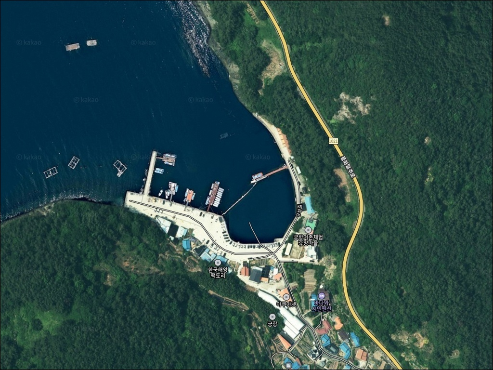
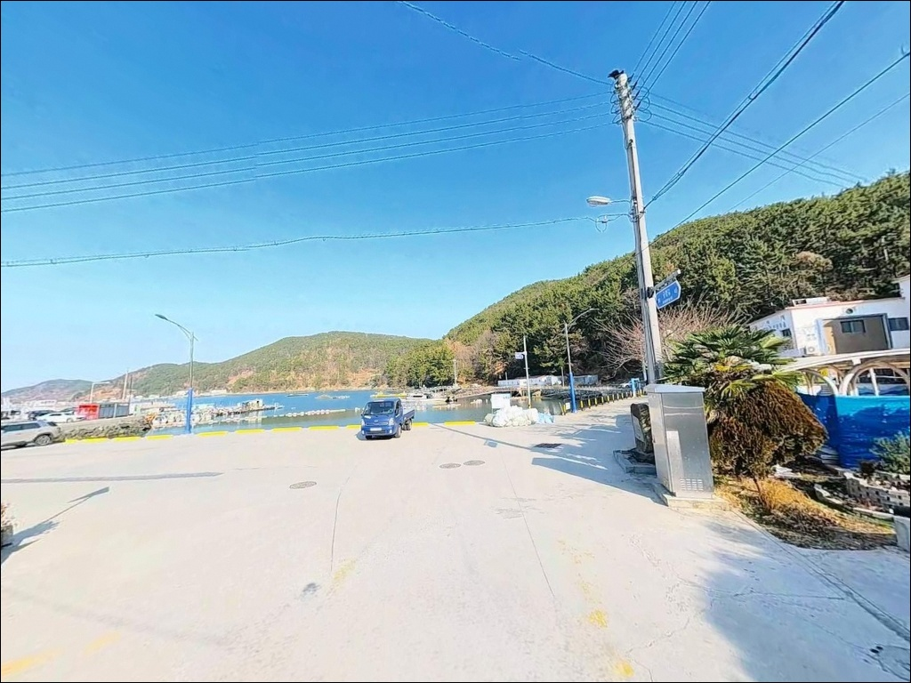
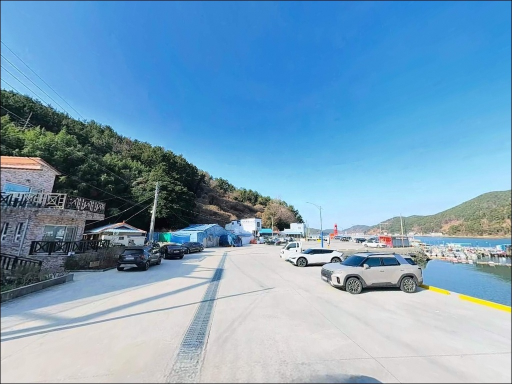
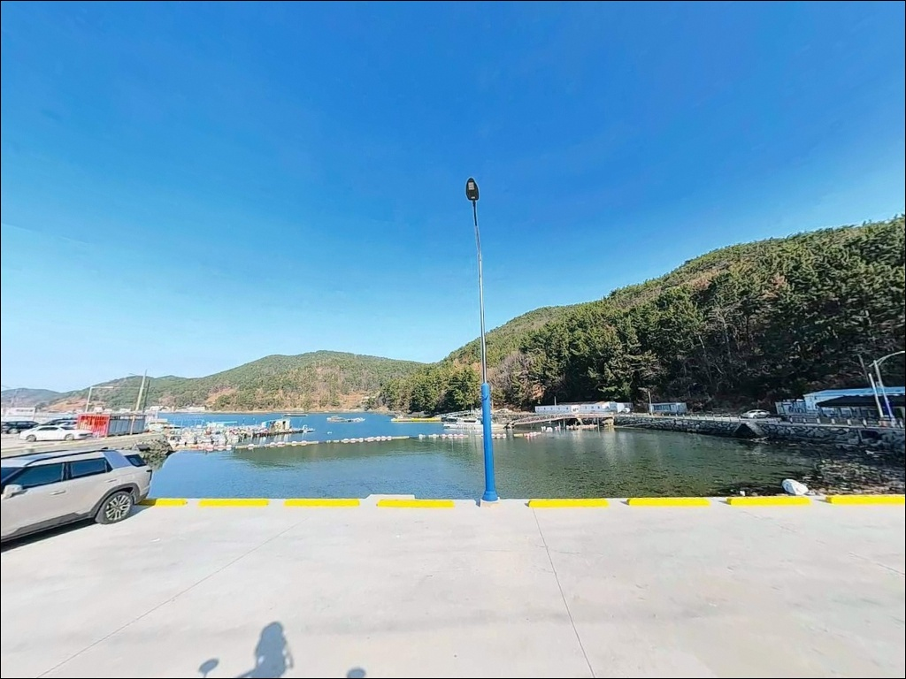
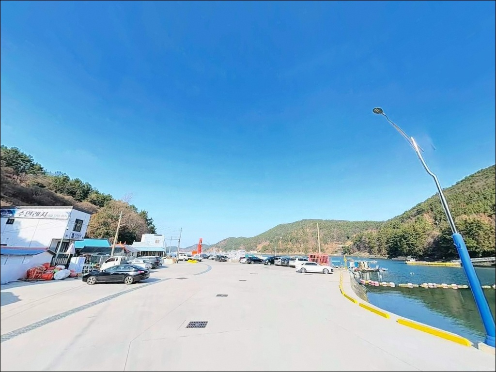
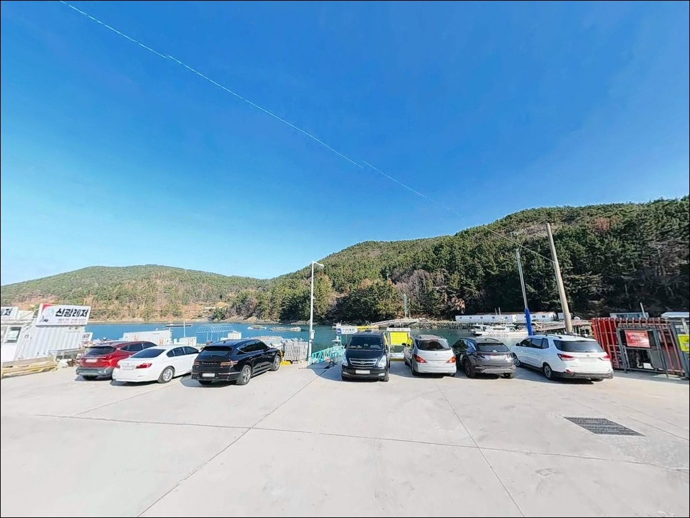
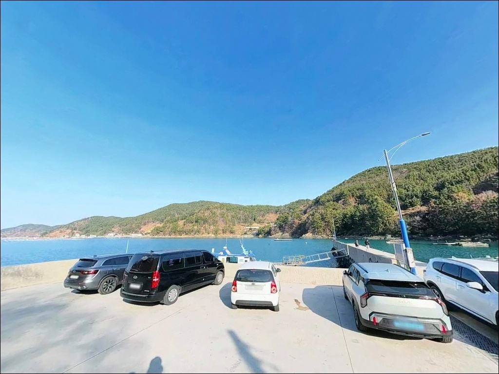
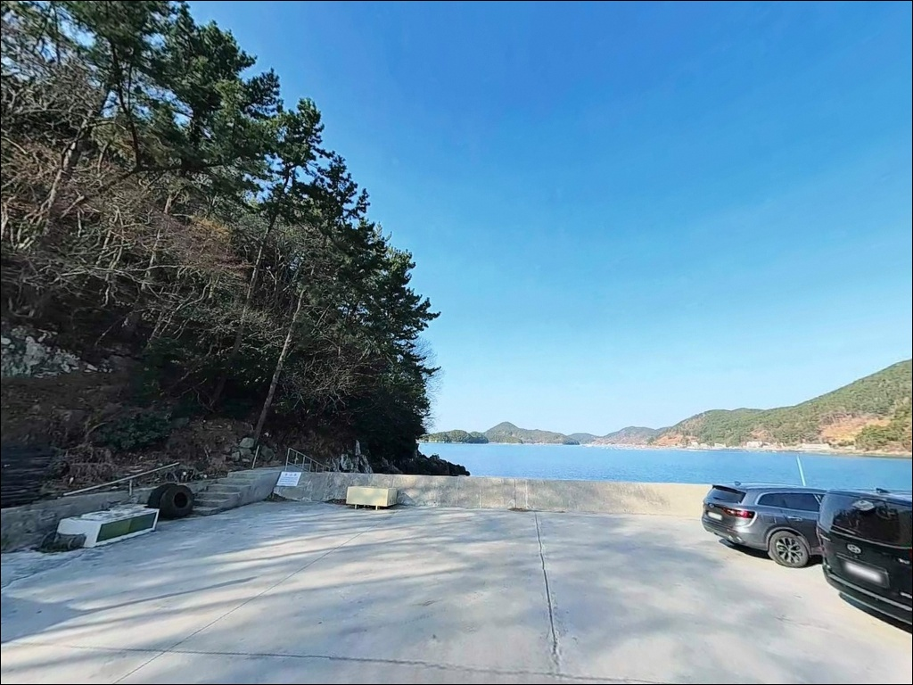
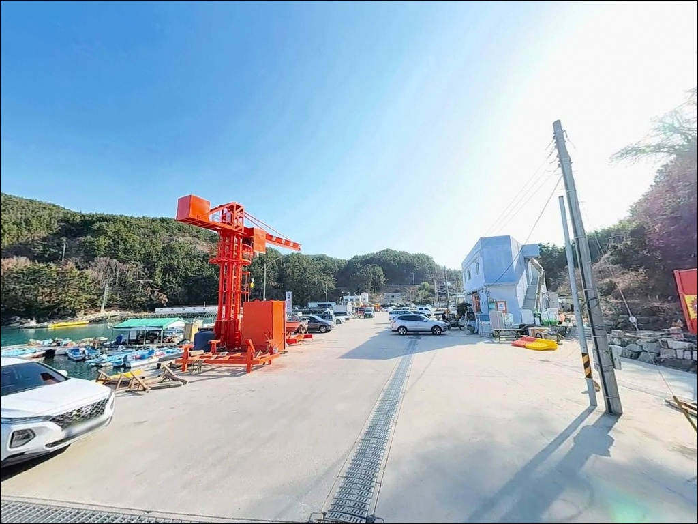

이 페이지에는 광고(제휴 링크 포함)가 있으며, 광고 링크를 통해 구매하면 운영자가 판매 수익 또는 수수료를 받을 수 있습니다. 포인트 사진: 카카오맵 스카이뷰·로드뷰. 이 페이지의 지도·사진 이미지는 카카오맵의 실제 서비스 이미지와 다를 수 있습니다.

궁항
경남 통영시 산양읍 당포리 802-4
내만 어항이라고 조류 판단을 건너뛰면
정작 낚시 자리에서 채비를 제대로 운용하지 못하는
상황을 맞닥뜨릴 수 있습니다.
궁항은 파도 영향이 적은 잔잔한 수역이지만,
항 입구 수로 방향의 조류 흐름이
물때에 따라 뚜렷하게 살아나는 구조입니다.
통영 미륵도 남서 해안에 자리한 궁항은
삼덕리·오비도 방면의 내만이 에워싸는 형태로
외해 파도와 바람 영향이 거의 차단됩니다.
어촌정주어항으로 지정된 소형 포구이며,
어촌체험휴양마을로도 운영 중인
통영 산양읍 해안의 조용한 낚시 거점입니다.
이 글은 궁항의 진입 동선, 차박 여건,
물때 판단 기준, 낚시 스타일별 공략 조건에 집중합니다.
조황 단정이나 특정 어종 보장은
이 글의 범위에 포함되지 않습니다.

통영 시내에서 산양일주도로를 타고 남쪽으로 내려오면
당포리 방향 마을 진입로와 연결됩니다.
포장 상태는 양호하지만
1~1.5차선 수준의 마을길이
이어지는 구간이 있어
대형 SUV나 캠핑 트레일러 차량은
위성지도 사전 확인이 필요합니다.
항 내부에는 소수 차량 기준의 회차 공간이 확보되어 있습니다.
대형 차량이라면 진입 전
회차 가능 여부를 먼저 파악해 두는 편이 안전합니다.
주차는 체험마을 입구 공용 주차장과
방파제 인근 공터를 활용하는 방식이 일반적이며,
어선 계류 동선과 겹치지 않는 자리를
먼저 확인하고 세워야 합니다.
산양일주도로에서의 접근 자체는 단순한 편입니다.
굴곡이 심한 산지 구간보다는
해안 도로를 따라 연결되는 구조라
초행이라도 내비게이션 진입 난이도가 높지 않습니다.

궁항은 어촌체험휴양마을이 운영되는 생활 중심 항구입니다.
민가 밀집도가 있는 편이라
완전한 프라이버시를 기대하기는 어렵습니다.
야간에는 가로등과 체험시설 조명이 존재해
완전 암흑 환경은 아닌 편입니다.
내만 구조 특성상 파도 소음이 적고
바람 영향도 외항 노출형 포인트보다 낮습니다.
낚시 후 조용히 하룻밤 머무는 목적으로는
나쁘지 않지만,
마을 주민 생활 공간이 가까운 만큼
야간 소음과 조명 사용에 특히 주의해야 합니다.
궁항이 포함된 통영시 산양읍 일대는
한려해상국립공원 한산도지구 구역입니다.
국립공원 구역 내에서는 지정된 야영장 외
야영·취사가 원칙적으로 제한됩니다.
방문 전 한려해상국립공원 동부사무소 또는
산양분소에 현지 규정 확인이 먼저입니다.

궁항 마을 내에는 어촌체험마을 사무실 인근
공중화장실과 무인매점이 설치되어 있습니다.
바다라면카페가 운영 중인 시기에는
간단한 음식도 이용 가능합니다.
다만 계절·운영 시간에 따라 다를 수 있어
식수와 기본 물품은 사전에 준비하는 편이 안전합니다.
반경 3km 권역에 삼덕항이 있습니다.
삼덕항 인근에는 낚시점이 다수 있어
채비 구입과 최신 조황 정보를
동시에 확인할 수 있습니다.
대형 마트나 편의점은
통영 시내 방향으로 이동해야 합니다.
응급 상황 발생 시 통영 시내까지
차량으로 약 20분 거리입니다.
출발 전 연료 확인과 비상약품 준비는
기본 사항으로 챙겨두는 편이 좋습니다.

궁항 방문 전 가장 먼저 확인해야 할 것은
물때입니다.
내만이라 외해 수준의 강한 조류는 없지만,
항 입구 수로 방향으로 조류가 흐르는 타이밍이
낚시 반응과 직결됩니다.
바다타임에서 통영 산양읍 기준 물때를 확인하고
들물·썰물 전환 시점 전후를 노려
입장 시각을 맞추는 것이 이 포인트의 기본 전략입니다.
한려해상국립공원 구역 포함 여부를
사전에 확인해야 합니다.
야영·취사 계획이 있다면
출발 전 산양분소(055-645-9206)에
현지 허용 여부를 먼저 물어보는 편이 현실적입니다.
어선 계류와 어업인 작업이 이루어지는 공간이므로
자리를 잡기 전에 어선 동선을 먼저 확인합니다.
야간 낚시 시에는 헤드랜턴과 구명조끼를
반드시 착용합니다.
채비 손실에 대비해
예비 채비를 넉넉히 준비해 가는 편이 좋습니다.

궁항의 지형적 핵심은
내만이면서도 항 입구가
수로 방향으로 열려 있는 구조입니다.
풍화리 반도와 오비도 섬이 에워싸는 형태라
외해 파도 영향이 차단되지만,
항 입구 수로 쪽으로는 조류가 살아나는 구간이
물때에 따라 형성됩니다.
수심은 항 내부 기준 만조 시 3~5m 수준이며,
방파제 끝단 외측으로 갈수록 깊어지는 구조입니다.
바닥은 뻘과 자갈, 여밭이 혼합되어 있어
어종 다양성이 높은 환경입니다.
방파제 외측 끝단과 선착장 전면이
이 포인트에서 가장 수심 변화가 뚜렷한 자리입니다.
내만형 구조라 야간에도 수면이 비교적 잔잔해
야간 라이트게임 운용이 안정적입니다.
방파제 가로등 빛이 항내 수면에 닿는 구간은
야간 소형 어종이 붙기 좋은 조건을 형성합니다.
출조 전에 삼덕항 일대 조황 검색을
먼저 해보시길 권합니다.

궁항에서 가장 잘 맞는 첫 번째 낚시 방식은
원투낚시입니다.
항 입구 방향으로 채비를 캐스팅해
뻘과 자갈이 섞인 바닥층을 공략하는 방식이며,
이 해역에서 기대해 볼 수 있는 어종은
도다리, 쥐노래미, 감성돔 계열입니다.
조류가 느려지는 정조 시점에
채비를 멀리 보내는 것이 기본 운용법입니다.
방파제 외측에서 조류를 태우는 릴찌낚시도
이 포인트 지형과 잘 어울립니다.
들물·썰물 전환 시점 전후,
외항 끝단 석축 주변이 핵심 자리입니다.
미륵도 내만~외해 접경 지점이라
감성돔 릴찌낚시 시즌에 탐색할 만한 구조입니다.
야간에는 볼락 라이트게임이 이 포인트에 잘 맞습니다.
내항 가로등 주변과 방파제 상판 석축 경계면을
소형 지그헤드로 천천히 탐색하는 방식입니다.
미륵도 내만 해역 전반에서
겨울철 야간 볼락과 호래기 에기 낚시가
대표 시즌 낚시 방식으로 자리 잡혀 있는 편입니다.
가을~초겨울에는 에깅도 운용 가능합니다.
방파제 외측에서 외해 방향으로 에기를 캐스팅하면
이 일대 해역 패턴상
갑오징어·무늬오징어 접근 가능성이 있는 구간입니다.

궁항이 기대에 못 미칠 때
가장 먼저 이동할 곳은
삼덕항 방파제입니다.
궁항에서 약 1km 거리로
도보 이동도 가능한 위치입니다.
동방파제(205m) + 서방파제(130m)로 구성된
규모가 큰 국가어항이라
다양한 낚시 방식을 복합 운용할 수 있습니다.
삼덕항에는 낚시점이 다수 있어
채비 구입과 현장 조황 정보를
한 번에 해결할 수 있습니다.
욕지도·국도 방면 선상낚시 출조 거점으로도
활용되는 항이라
궁항과 함께 묶어 동선을 짜는 방식이
이 해역에서 가장 효율적입니다.
달아마을 방파제는 궁항에서 4~5km 거리입니다.
외해 노출형 포인트로 호래기 릴찌낚시로
알려진 곳입니다.
주차는 유료로 운영됩니다.
수륙방파제(약 5~6km)는
학꽁치·갈치·볼락 시즌에
낚시인이 밀집하는 포인트입니다.

원투낚시와 볼락 라이트게임을 즐기는 낚시인이라면
궁항의 내만 지형 조건은 잘 맞는 구조입니다.
파도 영향이 적고 수면이 잔잔해
야간 소형 루어 운용이 안정적이며,
항 입구 수로 방향의 조류를 활용하면
원투와 릴찌낚시도 함께 공략할 수 있습니다.
반면 차박 목적으로 단독 방문하거나
국립공원 야영 규정 확인 없이 취사를 계획하면
현장에서 어려움을 겪을 수 있습니다.
물때 확인, 국립공원 야영 가능 여부 사전 문의,
삼덕항 경유 동선 계획이
이 포인트를 제대로 활용하는 세 가지 기준입니다.
통영 미륵도 해역의 조용한 내만에서
방파제 끝단 자리를 잡고
볼락 루어와 원투를 번갈아 운용하는 낚시와
잔잔한 수면 옆 하룻밤 차박을
함께 즐기고 싶은 낚시인에게
궁항은 충분히 기억에 남을 포인트입니다.